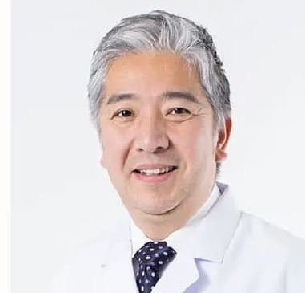
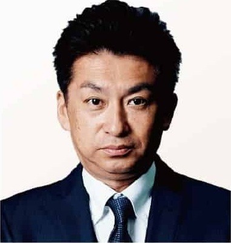
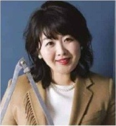
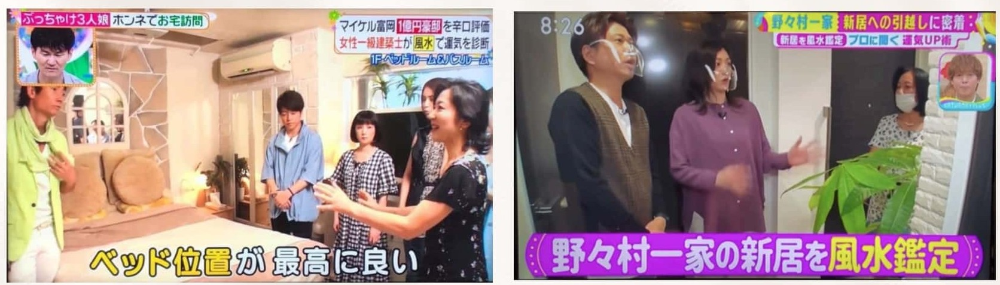
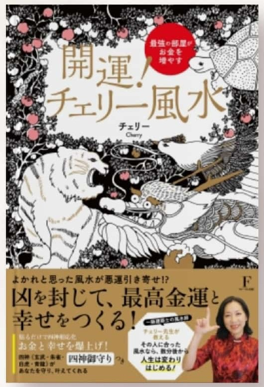

3本の動画を最後までご覧いただいた方へ
マスター講座
個別説明会のご案内
約60分・オンライン（Zoom）・無料
マスター講座に参加したい方、興味がある方は、
こちらから60分間の個別説明会にお申し込みください
※講座は動画から直接お申し込みできません。まず60分お話しします
個別説明会のお申し込み期限：9月25日(金) 23:59
※動画の中では「30分」「3日以内」とお伝えしましたが、
現在は面談を約60分に、受付を第3話の公開期間（5日間）に変更しています。
経営者・医師の方々からも
推薦の声をいただいています会社やクリニックを預かる方々が頼る風水を、ご自宅で使える形でお伝えします

日本眼科学会認定 眼科専門医
医療法人先進会 先進会眼科 理事長岡 義隆さま
科学者である医師の私が、
専門家として頼ったのが天野先生でした。
科学者でもある医師という立場でありながら、
科学では証明できない「流れ」のようなものが
確実に存在すると感じていました。
大阪のクリニックを移転するにあたり、
専門家の知恵をお借りしたいと思い、鑑定をお願いしました。
最も驚いたのは、先生に「絶対に動かしてはダメ」と言われた
レジの位置を、スタッフが誤って50cmずらしてしまった時のことです。
その期間だけ業績の伸びが鈍化し、
元の位置に戻した途端、上昇カーブに回復しました。
今では自宅も見ていただいています。
見えない力を考慮しないのは、
あまりにもハイリスクだと実感しています。

代表取締役社長小林 博文さま
風水を見ていただいた店舗は、
今もすごい勢いで伸びています。
当時は160店舗ほどを展開していましたが、
業界の課題でもある離職率の高さに悩んでいました。
鑑定後、まず社内の雰囲気が大きく変わり、
離職率が大幅に減りました。
「人は気の良い場所に集まる」という言葉通りです。
店舗数は全国200店舗、売上は100億円を突破しました。
特に風水を見ていただいた店舗は、
今もすごい勢いで伸びています。
東洋医学に携わる者として、目に見えない「気」の力が
これほどの成長に繋がったのだと実感しています。

どうせ見てもらうなら、本物で一流の方に。
そう思って、天野先生にお願いしました。
77年続く会社の新社屋を建てるにあたり、
氣のいいものにしたいと考えました。
次なる成長のために、良いものに適切に投資したい。
どうせ鑑定してもらうなら、
本物で一流の方に見てもらいたいと思っておりました。
鑑定後、学習意欲が安定しなかった長男は、
自分で進路を主体的に考えるようになりました。
次男も塾で成績がすごく上がり、私立中学に進学。
主人の仕事にも良い取引先がみつかり、
私自身も素晴らしい仕事のパートナーに恵まれました。
なぜ、「今」なのでしょうかこれは、風水を学ぶかどうか以前の話です
ここで少しだけ、厳しい話をさせてください。
風水には、20年ごとの大きな運気の周期があります。今の周期が始まったのは、2024年の2月。次に切り替わるのは2043年です。
ちょっと、計算してみてください。2043年に、あなたは何歳でしょうか。
お金を動かせる時間は、もう決まっています。
今55歳の方なら、2043年には74歳。今60歳の方なら、79歳です。つまり今のこの20年は、多くの方にとってご自分でお金を動かせる最後の20年とほとんど重なっています。次の周期を待つことは、できません。
環境は、毎日少しずつ効いています。良い方にも、悪い方にも。
ということは、流れの悪い家に3年住めば、3年分の差がつくということです。そしてこれは、あとから巻き戻すことができません。
家を変えられるのは、動けるうちだけです。
寝室の配置を変える。荷物を片づける。思い切って引っ越す。これは70代になってからでは、体力的にとても難しいことです。私は建築の現場で、それをずっと見てきました。
……ここまで聞くと、何か大がかりなことをしないといけないように聞こえたかもしれません。
でも、ご安心ください。
間取りを変える必要はありません。建て替えも、リフォームも要りません。
一度建ててしまった家は簡単に変えられませんが、気の流れは、今日から変えられます。
だからこそ私は、一日でも早く知っていただきたいのです。
講座は、この動画からは
直接お申し込みできませんなぜ、いきなり申し込めないようにしたのか
3本の動画を最後までご覧いただき、ありがとうございました。
ここまで見てくださったあなたは、きっと「本物の風水を自分で使えるようになりたい」「家族や仕事の流れを、自分の手で整えたい」そう感じているのではないでしょうか。
その気持ちがあるなら、なおさら、講座の申し込みボタンをここに置くことはしません。
まず一度、私と直接お話しする「入会事前確認」を受けていただきます。オンライン（Zoom）で約60分、無料です。
理由は3つあります。
コースも、価格も、お支払いの方法も、あなたの今の状況によって「最適」が変わるから。
まずは初級だけで自宅を整えたい方と、最初から発展まで一気に学んで仕事に活かしたい方では、おすすめするものが違います。
お話ししないまま入っていただくのは、私自身が不安だから。
「本当にこの人に合っていたのかな」と後から心配になるくらいなら、先に60分お話しした方がお互いのためです。
本気で人生を変えたい方と、しっかり向き合いたいから。
25年間、風水の現場で見てきて分かったのは、結果を出す人は「決めて、動く人」だということ。その最初の一歩を、私と一緒に踏み出してほしいのです。
※動画の中では「30分」「3日以内」とお伝えしましたが、
現在は面談を約60分に、受付を第3話の公開期間（5日間）に変更しています。
入会事前確認（約60分）で
行うこと売り込みの場ではなく、「あなたに合う形」を一緒に決める場です
60分でやることを、先にすべてお見せします。
1今のあなたの環境とお悩みを伺います
住まいのこと、仕事のこと、ご家族のこと。「玄関はどんな感じ？」「寝室はどっち向き？」といったところから、風水の目線で今の状態を一緒に見ていきます。
つまり、面談の前半だけでも、ちょっとした簡易鑑定になります。
2初級・応用・発展のどれが合うかを診断します
全く初めての方でも大丈夫です。まずは初級だけで自宅を鑑定できるようになりたいのか、応用・発展まで一気に学んでビジネスにも活かしたいのか。あなたの目的に合わせて、一緒に決めます。
3特別価格とお支払い方法をご案内します
この動画講座をご覧いただいた方だけの特別価格を、面談の中でお伝えします。一括・分割など、無理のないお支払い方法もその場でご相談ください。
4お互いの相性と方向性を確認します
風水は「学んで終わり」ではなく、講座が終わってからも実践相談や質問ができる環境で長く続いていくものです。だからこそ、最初に「一緒にやっていけそうか」をお互いに確かめたいのです。
残りの時間は、あなたからのご質問にお答えする時間です。最後に「どうされますか」と伺いますが、その場で決めなくて大丈夫です。持ち帰って考えたい方は、面談から24時間以内にお返事をいただく形にしています（特別価格でのご案内は、この24時間以内のお返事が対象です）。
面談は約60分が目安です。ご質問が多い場合は少し延びることもありますが、その場合も事前にお伝えします。
お申し込みの流れ
今のお悩み、風水を学びたい理由、ご希望の学び方などを伺います。「まだ何も分からない」という方も、そのままお書きください。
フォームの内容を確認のうえ、面談の候補日をご案内します。なお、ご記入いただいた内容によっては（私がお役に立てないと判断した場合など）面談をお断りさせていただくことがございます。あらかじめご了承ください。
上でお伝えした4つのことを、一緒に確認します。
「学びたい」「一緒にやっていけそう」とお互いに思えたら、その場でお手続きの方法をご案内します。もちろん、面談の場で決めなくても大丈夫です。
この講座で身につくこと3つのステップで、本物の中国伝統風水を「使える力」にします
風水は、初級だけで終わってしまうともったいない学問です。本当に使いこなすには、段階を踏んで理解を深め、知識も実習も重ねていくのがいちばんの近道です。最初から一貫して学ぶと、理解のスピードも結果の出方も大きく変わります。
「全く何も知りません、初めてです」という方のためのコースです。
風水の基礎と環境の見方を学び、自分と家族の空間を自分で整えられるようになります。初級が終わる頃には、自宅を自分で鑑定でき、「私の寝る位置はここがいい」まで分かります。ご家族の分も見られるようになります。
初級とは違う運気の流れを読み、時代と状況に応じた判断ができるようになります。財の運気も理解できるようになります。
最終回（6回目）は実習会です。風水で使う羅盤（らばん）を手に、実際の土地で測る練習をします。実習会にご参加の方には、この羅盤をプレゼントしています。
時の運気と建物の運気を合わせて読み、いろいろな応用を組み合わせて使えるようになります。ビジネスにも活かせるレベルです。修了された方は、外部の先生をお招きする謝恩会にご招待しています。
学び方
オンライン（Zoom）なので、移動の負担なく、どこからでも参加できます。毎回、まず予習の動画を見ていただき、そのあとZoomの復習講座で、分からなかったところを質問して解決します。ほかの受講生の質問から「それ、私も知らなかった」という気づきが得られるのも、この形の良いところです。
講座が終わってからも
実践の練習会、ご相談できる会、質問できる環境があります。学んだことを、ご自分の暮らしに落とし込むところまで一緒に進めます。
まずは初級から始めるか、初級・応用・発展を一気に学ぶ「フルパック」にするか。どちらが合うかは、面談で一緒に決めましょう。
今回お申し込みの方への特典第3話の動画でお伝えした2つです
1Zoom風水特別セミナーへのご招待
毎月、または2ヶ月に1回ほど開催している、本来は有料の風水特別セミナーにご招待します。講座で学んだことを、実際の事例で深める場です。
2風水基礎講座を、講座が始まる前にすべてご視聴いただけます
これまで有料で開催してきた風水の基礎講座を、お申し込み後すぐにすべてご覧いただけます。講座が始まる前の予習として、お使いください。
実際に学んだ方の変化第3話でご紹介した3名の方です
熊坂雅代さん（会社員）
「主人の仕事のミスがなくなり、人間関係も劇的に改善」
かつての主人は慢性的疲労で、仕事でミスが重なり、意欲も低下して人間関係もうまくいきませんでした。でも講座で学び、寝る場所を変えただけで熟睡できるように。ミスもなくなり、今は楽しく仕事に取り組んでいます。こんなに変わるとは思いませんでした。
田中三智代さん（薬剤師・栄養睡眠アドバイザー）
「娘の机の位置を変えただけで、難関試験に合格」
長女がちょうど試験だった時に、勉強が捗るように机の位置を変えてみました。休日にカフェで勉強していた長女が、移動した机でとても集中でき、見事に難関試験へ無事合格。それから家族から「風水」に絶大な信頼を得ています。環境がここまで影響するとは。
小池裕美子さん（宮城県・主婦）
「風水を学んでから、家庭運も夫婦関係も良好」
自分で習って色々な風水を実際に試してみたら、やはり良い変化が起こりました。主人の仕事運が爆上がりし、人間関係や夫婦関係も良好です。また、自分自身も風水を通じて成長して、人生が変わりました。
一級建築士 × 風水師25年・延べ約4,000件の現場から
天野 千恵里（風水空間クリエーター／株式会社KAIUN 代表／風水を専門とする一級建築士）
大手ハウスメーカーで設計とインテリアコーディネートに携わり、住宅・店舗・オフィスなど、ご相談も含めて延べ約4,000件の物件に関わってきました。現在は、新築・リフォーム・今お住まいの建物に中国伝統風水を取り入れるお手伝いをしています。クライアントには、大手衣料メーカー、東証一部上場企業の経営者、クリニック、各種店舗のオーナーの方々がいらっしゃいます。
TV出演
2019年「ヒルナンデス 有名人豪邸訪問、風水でチェック!」
2021年 日本テレビ「サタデープラス 芸能人お引っ越し風水」

商業出版
フローラル出版「開運!チェリー風水ー最強の部屋がお金を増やす」

メディア掲載
講談社 ミモレmi-mollet／講談社 anan2023年新春特別号
PHP 2024年あなたの運勢「凶を封じるおうち風水」
Re壁(日本壁装協会)「運を変えたい人が住むべき本当に良い家とは」
よくあるご質問個別説明会（入会事前確認）の前に、よく聞かれること
気になる項目をタップすると開きます。ここに無いことも、面談で遠慮なく聞いてください。
面談で売り込まれませんか？
まだ受講するか決めていないのですが、申し込んでいいですか？
風水の知識がまったくありません。ついていけますか？
どのコースにするか迷っています
お金のこと・支払い方法のことも面談で相談できますか？
家族に相談してから決めたいのですが
自宅が賃貸・マンションでも、風水は使えますか？
仕事や家事で忙しいのですが、続けられますか？
面談は本当に60分ですか？
フォームを送れば、必ず面談してもらえますか？
申し込む前に、
聞いておきたいことがある方へLINEで、天野に直接ご相談いただけます
「うちの場合はどうなんだろう」「こんなことを聞いてもいいのかな」
そう思って手が止まっているなら、先にLINEでメッセージをください。私が直接お返事します。ひとこと、ふたことで構いません。

入会事前確認の受付は
5日間限定です
入会事前確認のお申し込みは、9月25日(金) 23:59 までに限らせていただきます（第3話の公開期間中・5日間）。特別価格のご案内も、この期間中に面談を申し込まれた方が対象です。（動画では「3日以内」とお伝えしましたが、5日間に延長しています）
まずは、事前フォームの送信だけでも先に済ませておいてください。面談の日程は、その後で調整できます。
最後に
お話ししないまま入っていただくのは、私自身も不安です。
だからこそ、まず60分、直接お話しさせてください。あなたが今どこで困っているのか、どんな未来にしたいのか、聞かせてください。
そして、あなたに本当に合う形を、一緒に決めましょう。
あなたの玄関は、良い気の入り口になっていますか。
寝室で、ちゃんと休めていますか。
環境は、変えた瞬間から未来の流れが変わり始めます。その最初の一歩を、ここから一緒に踏み出せたら嬉しいです。
天野千恵里
お申し込み期限：9月25日(金) 23:59